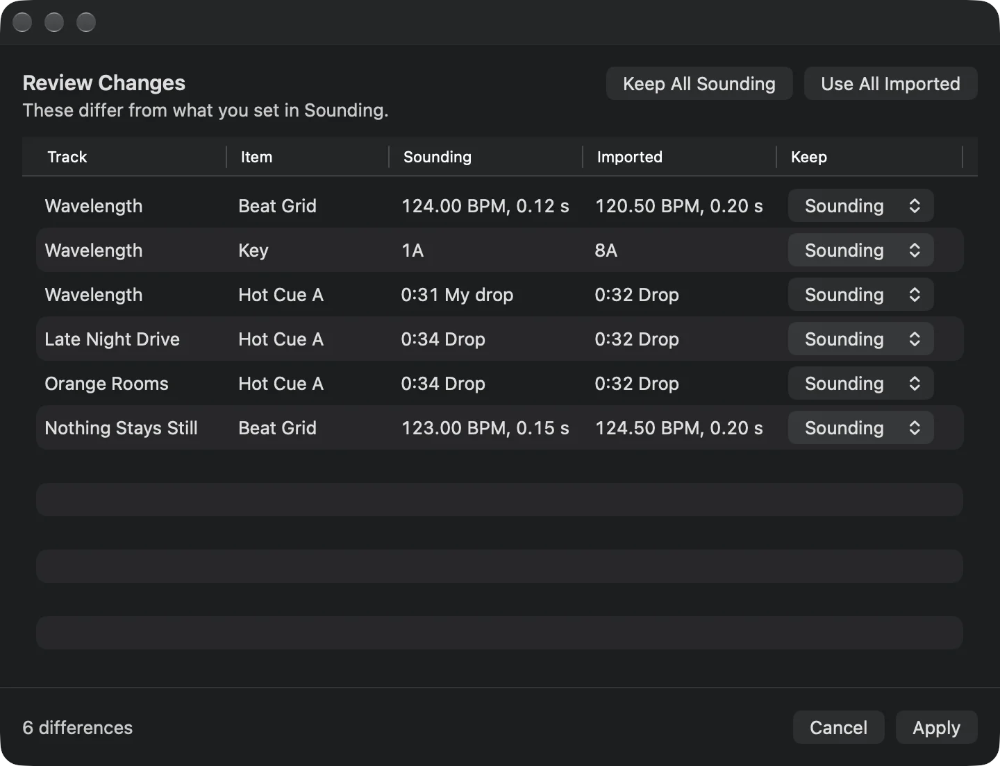
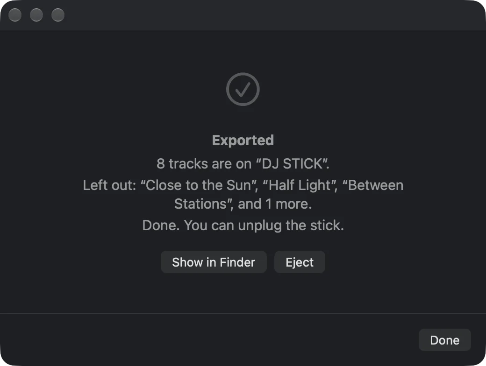
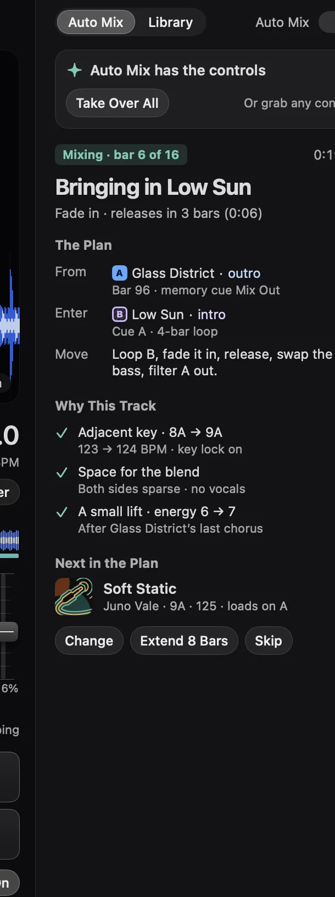

Drop it on the one.
Sounding’s Mac app has a proper DJ side: two decks and a mixer, a Prep window for beat grids and cue points, rekordbox in and out, and a line to the CDJs. Your cue points follow you to every device, and Auto Mix reads them too.
Invite only. I made this for me, and for a few people who now owe me a favour. The decks are on the Mac.
Then drag a record, or turn a knob. They all work. The beat’s one I made up for this page.
Two decks on your Mac.
These are the Decks. Two of them, with a crossfader in the middle. Drag a track from your Likes onto either one, and your Mac works out its tempo and key, so you can see what’ll fit.
Three-band EQ and a filter on each side. Swap the basslines, sweep the filter, ride the crossfader. Sync and key lock are there for when your ears need a hand. Each deck takes an Audio Unit effect, and so does the send.
Hot cues and loops. Four pads a deck, loops you can halve and double, and an echo for the lazy exit. Every hot cue you set is saved with the track (more on where it goes in a bit).
Plug in a DDJ-400 and it’s mapped. Jogs, tempo, EQs, filters, channel faders, the crossfader, play, cue, loops and all eight pads a side. It’s the only controller with a mapping so far, so anything else gets politely ignored.
Prep it once.
This is Prep. A window on the Mac (⌥⌘P) for every track you’re getting ready: its beat grid, key and cue points. Sounding works the grid out itself, and it’s usually right.
When it isn’t, fix it. Put the cursor on the first kick and hit Set Downbeat. Nudge it 10 ms at a time if you’re fussy, halve or double the tempo if it guessed wrong, then lock it. Nothing moves a locked grid, not even an import.
Hot cues A to H, in colour. Name them, colour them, keep them on the pads. Memory cues mark a spot without using a pad, and a loop can sit on a pad too. Keys 1 to 8 set a hot cue, M drops a memory cue, L makes a four-bar loop.
Cue points that learn. Keep jumping back to the same bit (three times, over at least two listens, on any of your devices) and Sounding suggests a memory cue there called Often replayed. Accept it or dismiss it. It never takes a pad on its own.

Your cues, on everything.
Set a cue once. In Prep on the Mac: a hot cue called Drop on pad A, Break on B, named and coloured.
It’s on your iPhone and iPad too. Cue points sync through your own iCloud, so they’re there whatever you play the track on. Move, rename or delete one on the iPad and the Mac catches up.
And on the Apple TV. More, then Cue Points, lists them on Now Playing with their times, which is handy when the TV’s the one playing the party. It also suggests a Mix Out where Auto Mix would leave.
Auto Mix reads them. A hot cue called Drop or Break is somewhere it can bring a track in, a memory cue on a phrase is somewhere it can leave, and Mix In and Mix Out come first. Suggestions count too, at half the weight.
Next to the CDJs.
Put the Mac on the same network as your CDJs and Sounding can see them: what each player’s doing, the tempo, who’s master and which channel’s on air. It calls them DJ Players, and they live under Hardware.
It writes the setlist for you. Turn on Record Setlists and every track that’s on air for 16 bars goes into a Setlist called “Recorded at” and the date. With a DJM on the network, a quick listen in the headphones doesn’t count, so you get what you actually played.
The Mac can be a deck too. Turn on Use as Virtual Deck and the Mac joins as a player, so the CDJs can sync to whatever’s playing in Decks. Or go the other way: Sync to DJ Players and Decks follows the tempo master. Quit rekordbox first (they don’t share).
I built this against a fake CDJ I wrote, not a real booth. I haven’t had it on a club rig yet. If you’ve got one and a spare evening, I’d love to hear how it goes.
Uses Pro DJ Link. Not affiliated with AlphaTheta.
rekordbox, both ways.
Do your prep in Sounding, in rekordbox, or both. They swap notes.
Import your rekordbox.xml and Sounding matches each track to your SoundCloud library, by ISRC or by title, artist and length. If it’s not sure, it asks. If you’ve already prepped a track differently, you choose per row: Keep Sounding or Use Imported. It never deletes anything you’ve made.
Export makes a new XML file with your grids, hot cues, memory cues and loops. Sounding never touches your own rekordbox library. Only tracks you’ve linked to a file on your Mac go across, because rekordbox needs the audio. Tracks that only live on SoundCloud stay in Sounding, cues and all.
USB sticks, straight from Sounding. Export to USB in Prep (⇧⌘E) writes a stick the CDJ-2000NXS2 and CDJ-3000 can read: your own files with their grids, hot cues, memory cues and waveforms, three-band on the 3000. Everything goes into a hidden folder first, gets checked and flushed, and only then swaps into place, so pulling the stick out halfway leaves it how it was. No auto-eject, no faff. It’s checked against real rekordbox exports, but it hasn’t met a real CDJ yet.


Auto Mix, honestly.
Auto Mix plays each track out and blends the next one in over 16 to 32 bars, on the phrase.
It only beat-matches when it’s measured where the bars are on both tracks. When it hasn’t, it doesn’t fake it: it cuts cleanly on the bar instead. Your cues steer it, and a Mix Out cue decides where it leaves.
Playing like a DJ. Wedding DJ blends, echoes out and cuts. Auto Mix adds breakdown exits and drop-ins. Junkie adds loop builds, tempo ramps and jumps through a long set. Every move lands on a measured downbeat, and Skip and Pause always win.
Energy. Follow the Night warms up, peaks around midnight and cools down, or set Chill to Peak yourself. Match My Workout reads your heart rate from Apple Watch. Now Playing names the next move, with Mix Now and Extend This.
It shows its working. On the Mac, the Decks panel says what it’s doing and why: the move, the bar it’s on, where it leaves and enters, why it picked the track, and what’s next. Change, Extend 8 Bars or Skip, or Take Over All and it hands you the controls on the beat.
I’ve measured every move against test tracks, but not yet on a full night of real music. If one sounds wrong, tell me which.

Fair warning.
This is the newest and least-tested corner of Sounding. Decks, Prep, rekordbox and cue sync are in the beta on the Mac now. DJ Players and USB sticks are in too, but they’ve only ever met a fake CDJ. The DJ-style Auto Mix is in too, but only checked against test tracks so far.
It’s me, in Amsterdam, mostly in the evenings. No support team, no promises. Tell me what breaks, and what you’d want next.
The DJ side needs macOS 27. Cue points also show up on iOS and iPadOS 26.5 or later, and tvOS 27.
Invite only. I made this for me, and for a few people who now owe me a favour.
Found a bug? Email sounding@alex.forbes.red. Back to the homepage